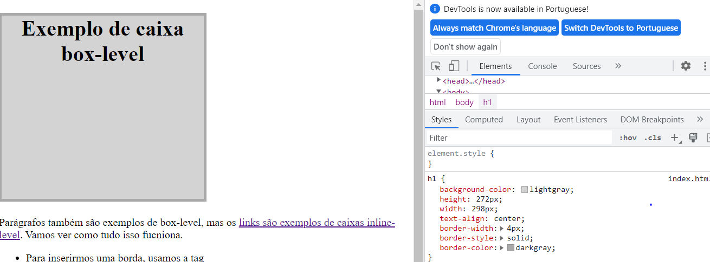
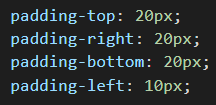

Exemplo de caixa box-level
Parágrafos também são exemplos de box-level, mas os links são exemplos de caixas inline-level. Vamos ver como tudo isso fucniona.
- Para inserirmos uma borda, usamos a tag
border-style: solid;
dentro de style.E para escolhermos a cor da bordar, colocamos border-color: blue;Onde blue é a cor selecionada.
- Quando em um navegador vamos em inspesionar, conseguimos modificar as configurações padroões e que incluimos no site, para ver como ficaria, lembrando que isso não altera em nada no nosso código, apenas permite visualizar de acordo com a configuração feita.

- Para configurarmos a distancia do texto para borda, usamos a tag Padding-Top,Padding-Right, Padding-Bottom e Padding-Left. (Sempre nesta ordem, sentido horário de relógio começando de cima.
